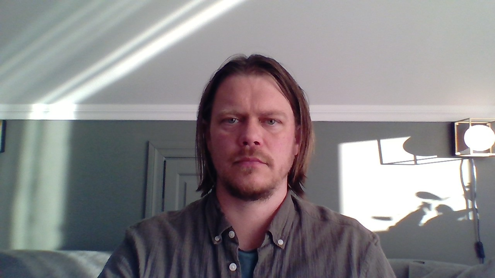

Om meg
Mitt navn er Benjamin og jeg bor i Kristiansand. I rundt 20 år har jeg jobbet i mat- og utelivsbransjen, som servitør og kokk og senere som restaurantsjef, daglig leder og medeier. Jeg kjenner hverdagen til en liten bedrift godt og vet hvor mye det betyr å bli funnet av nye gjester.
Jeg har studert digital markedsføring ved Gokstad Akademiet i to år, og utvider nå kompetansen min med webdesign på samme skole. Jeg bygger opp porteføljen min innen nettsider, lokal SEO og innholdsproduksjon.
Jeg vil hjelpe serveringssteder og andre servicebedrifter å nå nye kunder på nett.
